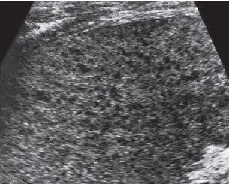
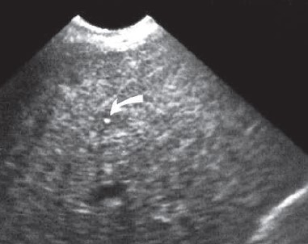

Liver candidiasis
The liver is frequently involved secondary to hematogenous spread of mycotic infections in other organs, most oten the lungs. Patients are generally immunocompromised particularly those receiving chemotherapy for hematological malignancies.
Clinical presentation
- The clinical characteristic is usually persistent fever in a neutropenic patient
Ultrasound features
- “Wheel within a wheel”: peripheral hypoechoic zone with inner echogenic wheel and central hypoechoic nidus. The central nidus represents focal necrosis in which fungal elements are found. This is seen early in the disease.
- Bull's-eye: 1- to 4-cm lesion with hyperechoic center and hypoechoic rim. It is present when neutrophil counts return to normal. The echogenic center contains inflammatory cells
- Uniformly hypoechoic: most common, corresponding to progressive fibrosis
- Echogenic: variable calcification, representing scar formation
Figure 1

Figure 2

Figure 3